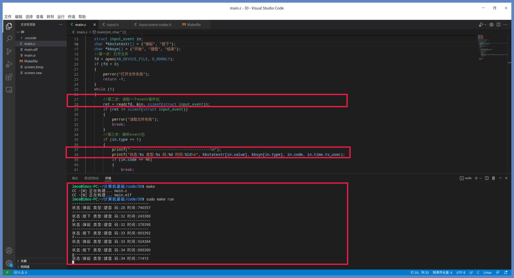
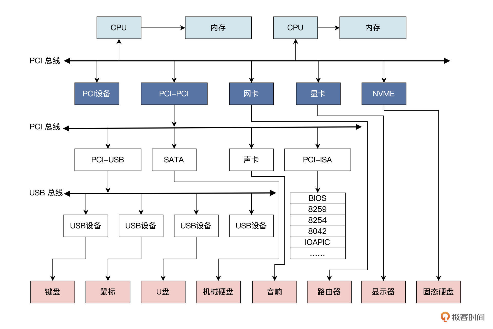
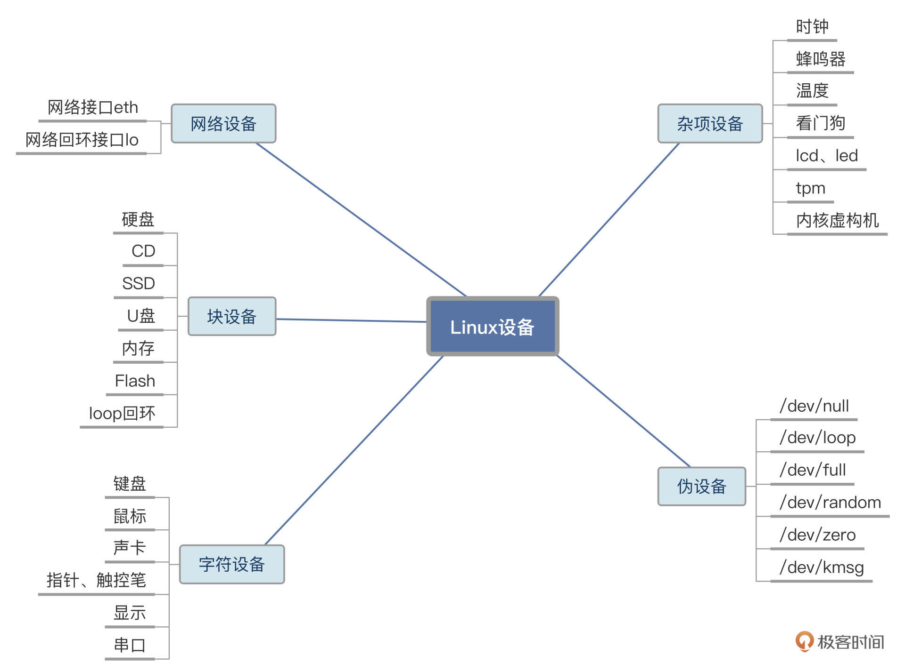
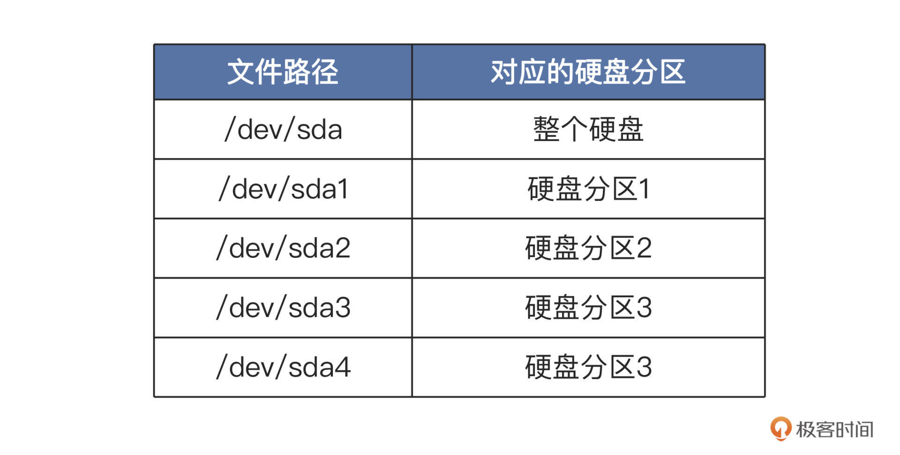
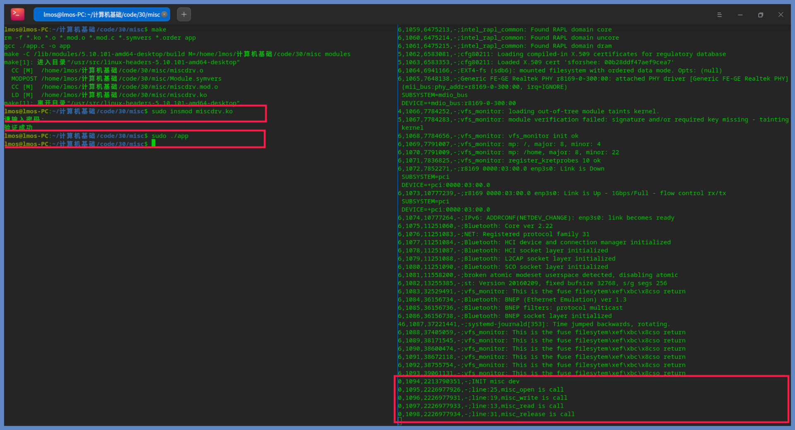
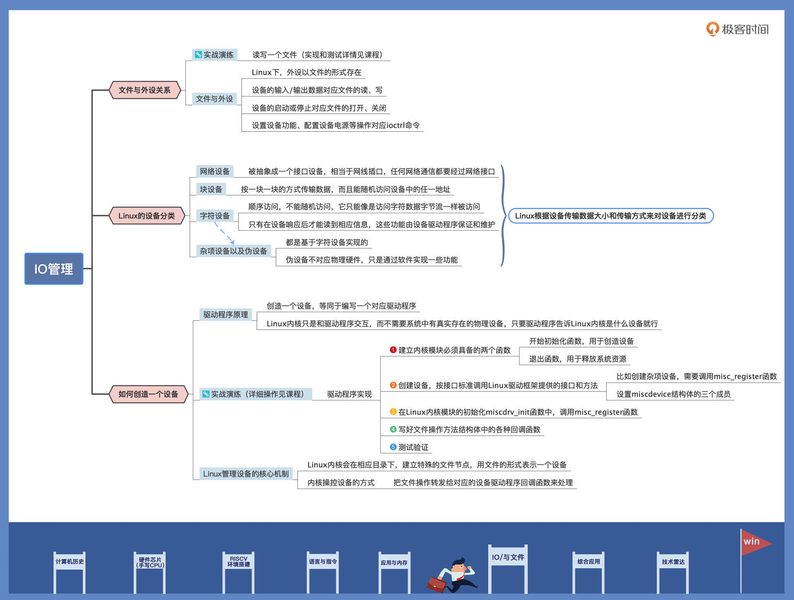

- 00 开篇词 练好基本功，优秀工程师成长第一步.md.html
- 01 CISC & RISC：从何而来，何至于此.md.html
- 02 RISC特性与发展：RISC-V凭什么成为“半导体行业的Linux”？.md.html
- 03 硬件语言筑基（一）：从硬件语言开启手写CPU之旅.md.html
- 04 硬件语言筑基（二）_ 代码是怎么生成具体电路的？.md.html
- 05 指令架构：RISC-V在CPU设计上到底有哪些优势？.md.html
- 06 手写CPU（一）：迷你CPU架构设计与取指令实现.md.html
- 07 手写CPU（二）：如何实现指令译码模块？.md.html
- 08 手写CPU（三）：如何实现指令执行模块？.md.html
- 09 手写CPU（四）：如何实现CPU流水线的访存阶段？.md.html
- 10 手写CPU（五）：CPU流水线的写回模块如何实现？.md.html
- 11 手写CPU（六）：如何让我们的CPU跑起来？.md.html
- 12 QEMU：支持RISC-V的QEMU如何构建？.md.html
- 13 小试牛刀：跑通RISC-V平台的Hello World程序.md.html
- 14 走进C语言：高级语言怎样抽象执行逻辑？.md.html
- 15 C与汇编：揭秘C语言编译器的“搬砖”日常.md.html
- 16 RISC-V指令精讲（一）：算术指令实现与调试.md.html
- 17 RISC-V指令精讲（二）：算术指令实现与调试.md.html
- 18 RISC-V指令精讲（三）：跳转指令实现与调试.md.html
- 19 RISC-V指令精讲（四）：跳转指令实现与调试.md.html
- 20 RISC-V指令精讲（五）：原子指令实现与调试.md.html
- 21 RISC-V指令精讲（六）：加载指令实现与调试.md.html
- 22 RISC-V指令精讲（七）：访存指令实现与调试.md.html
- 23 内存地址空间：程序中地址的三种产生方式.md.html
- 24 虚实结合：虚拟内存和物理内存.md.html
- 25 堆&栈：堆与栈的区别和应用.md.html
- 26 延迟分配：提高内存利用率的三种机制.md.html
- 27 应用内存管理：Linux的应用与内存管理.md.html
- 28 进程调度：应用为什么能并行执行？.md.html
- 29 应用间通信（一）：详解Linux进程IPC.md.html
- 30 应用间通信（二）：详解Linux进程IPC.md.html
- 31 外设通信：IO Cache与IO调度.md.html
- 32 IO管理：Linux如何管理多个外设？.md.html
- 33 lotop与lostat命令：聊聊命令背后的故事与工作原理.md.html
- 34 文件仓库：初识文件与文件系统.md.html
- 35 Linux文件系统（一）：Linux如何存放文件？.md.html
- 36 Linux文件系统（二）：Linux如何存放文件？.md.html
- 37 浏览器原理（一）：浏览器为什么要用多进程模型？.md.html
- 38 浏览器原理（二）：浏览器进程通信与网络渲染详解.md.html
- 39 源码解读：V8 执行 JS 代码的全过程.md.html
- 40 内功心法（一）：内核和后端通用的设计思想有哪些？.md.html
- 41 内功心法（二）：内核和后端通用的设计思想有哪些？.md.html
- 42 性能调优：性能调优工具eBPF和调优方法.md.html
- 先睹为快：迷你CPU项目效果演示.md.html
- 加餐01 云计算基础：自己动手搭建一款IAAS虚拟化平台.md.html
- 加餐02 学习攻略（一）：大数据&云计算，究竟怎么学？.md.html
- 加餐03 学习攻略（二）：大数据&云计算，究竟怎么学？.md.html
- 加餐04 谈谈容器云与和CaaS平台.md.html
- 加餐05 分布式微服务与智能SaaS.md.html
- 国庆策划01 知识挑战赛：检验一下学习成果吧！.md.html
- 国庆策划02 来自课代表的学习锦囊.md.html
- 国庆策划03 揭秘代码优化操作和栈保护机制.md.html
- 温故知新 思考题参考答案（一）.md.html
- 用户故事 我是怎样学习Verilog的？.md.html
- 结束语 心若有所向往，何惧道阻且长.md.html
- 捐赠
32 IO管理：Linux如何管理多个外设？
你好，我是LMOS。
在上一节课中，我们通过对IO Cache的学习，知道了IO Cache缓存了IO设备的数据，这些数据经过IO 调度器送给块层，进而发送给IO设备。
今天我们再往下一层探索，以Linux为例，看看Linux是如何管理多个IO外设的。我们先从例子出发，了解一下设备在Linux中的与众不同，然后看看设备分类及接口，分析一下应用开发人员应该如何使用它们，最后我会带你一起实现一个设备加深理解。
这节课的配套代码，你可以从这里下载。话不多说，我们开始吧。
文件和外设的关系
用几十行代码在Linux上读写一个文件，我们都很熟悉吧。若是不熟悉，百度、谷歌都可以让我们熟悉。
我们今天要写的这个小例子就是从读取一个文件开始的。想要读取文件，首先得知道文件在哪里，也就是需要知道文件路径名，知道了文件路径名，再进行“三步走”就可以：打开它、读取它、关闭它。一句话，open、read、close一气呵成。
那么这个文件是什么呢，路径名如下所示：
"/dev/input/event3"
看了路径名，我们知道enent3文件在根目录下dev目录的input目录之下。从名称上看，这好像与设备、输入、事件有关系，我这里先卖个关子，看完后面的讲解，你自然就知道答案了。
我们先来搞清楚读取这个文件能得到什么数据，读取该文件得到的不是一个字符流，而是由时间、类型、码值以及状态数据封装成的一个结构。每读取一次，就能得到一个这样的结构，该结构如下所示：
struct input_event {
struct timeval time; //时间
__u16 type;
__u16 code;
__s32 value;
};
这个结构看上去好像是某个事件的信息，或者产生的数据。- 现在我们知道了读什么文件，也知道了读取该文件能得到什么样的内容，接下来我们立刻编写代码练练手。让我们写代码来实现读写”/dev/input/event3”文件，如下所示：
#define KB_DEVICE_FILE "/dev/input/event3"
int main(int argc, char *argv[])
{
int fd = -1, ret = -1;
struct input_event in;
char *kbstatestr[] = {"弹起", "按下"};
char *kbsyn[] = {"开始", "键盘", "结束"};
//第一步：打开文件
fd = open(KB_DEVICE_FILE, O_RDONLY);
if (fd < 0)
{
perror("打开文件失败");
return -1;
}
while (1)
{
//第二步：读取一个event事件包
ret = read(fd, &in, sizeof(struct input_event));
if (ret != sizeof(struct input_event))
{
perror("读取文件失败");
break;
}
//第三步：解析event包
if (in.type == 1)
{
printf("------------------------------------\n");
printf("状态:%s 类型:%s 码:%d 时间:%ld\n", kbstatestr[in.value], kbsyn[in.type], in.code, in.time.tv_usec);
if (in.code == 46)
{
break;
}
}
}
//第四步：关闭文件
close(fd);
return 0;
}
上述代码逻辑很简单，首先打开了/dev/input/event3这个文件，然后在一个循环中反复读取该文件并打印出数据，读取错误和码值等于46时，就跳出循环，最后关闭该文件，程序退出。
接下来就是测试环节。我们用VSCode打开对应的工程目录，编译一下，然后运行。效果如下所示：

你按下键盘上一个键，终端中它就会输出一行，松开键又会输出一行，输出“按下”或“弹起”的状态、键盘码以及按下弹起所花费的时间，这些数据精确地反映了键盘按键动作。
一个文件就能反映键盘的动作和数据，难道不奇怪吗？你是不是猛然醒悟了，原来/dev/input/event3这个文件就代表键盘，这个文件是特殊的设备文件，访问这种文件就是访问IO硬件设备。其实，dev目录下全部的文件都是设备文件，不知道你的脑海中是不是浮现出了熟悉的Linux设计哲学——一切都是文件。
你可以在dev目录下找到系统的所有设备，它们都是以文件的形式存在的。从这种角度看，这里的文件是抽象的，是一种资源对象的标识。从上面的例子，我们也可以看出，设备的操作完全符合文件的操作方式。设备输入、输出数据的操作对应了文件的读写，设备的启动或者停止则对应文件的打开或关闭。
说到这，你可能要反对我了：设备的操作不只是输入输出数据，还有设置设备功能、配置设备电源等操作么？例如设置声卡音量、设置处理器进入待机状态以减少功耗等等。
可是你别忘了，文件还有一个操作——ioctrl，通过它来给设备发送命令或者设置相关功能。这样一个设备的所有操作就和文件对上了。不过可不要想着用这种方案干坏事哦，比如获取别人输入的敏感信息。
设备分类
设想一下，你需要管理你家里的日常用品，你通常会怎么做？你是不是首先会对这些物品进行分类。你可能会按物品的功能用途分类，也可能按物品归属于哪位家庭成员来分类。
对于Linux这个计算机大总管也是如此，什么设备有什么功能、是用来做什么的、有多少个这种类型的设备、它们接入系统的方式是什么……这些信息，Linux都需要了解得非常清楚才可以。
在了解Linux如何对设备进行分类之前，我们应该先了解一下常规情况下系统中都有哪些设备。我为你画了一幅图，如下所示：

上图是一个典型的计算机系统，你先不管物理机器的结构和形式，逻辑上就是这样的。实际情况可能比图中有更多或者更少的总线和设备。
各种设备通过总线相连。这里我们只需要记住，计算机中有很多的设备，Linux 会把这些设备分成几类，分别是：网络设备、块设备、字符设备、杂项设备以及伪设备。具体情况你可以参考我后面梳理的示意图：

我们先来看看网络设备。网络设备在Linux上被抽象成一个接口设备，相当于网线插口，任何网络通信都要经过网络接口。接口就是能与其他主机交换数据的设备，像是电子信号从网口流到另一个网口一样。
Linux使用一套传输数据包的函数来与网络设备驱动程序通信，它们与字符设备和块设备或者文件的read()和write()接口不同，所以网络设备在Linux中是一个独特的存在。
一般情况下，接口对应于物理网卡，但也可能是纯软件实现的，比如输入ifconfig命令查看网口时，会输出一个eth0、一个lo等信息，lo就是网络回环（loopback）接口。Linux会给每个网络接口分配一个唯一的名字，比如eth0、eth1等，方便其它软件访问这些接口，但这个名字在文件系统中并没有对应的文件名。
然后，我们来看看块设备，块设备这种设备类型也是Linux下的一个大类。块设备的特点是能按一块一块的方式传输数据，而且能随机访问设备中的任一地址，具体是通过/dev目录下的文件系统节点来访问。常见的块设备包括硬盘、flash、ssd、U盘、SD卡等。
块设备上通常能够安装文件系统，即能被格式化。比如你的机器上有一块硬盘，硬盘上有4个分区。那么在Linux系统中的表现就是这样的：

这些设备文件可以像访问普通文件一样使用，你只要计算好硬盘地址，就能把数据写入到硬盘扇区中。比方说，我们可以用cat /dev/sda1 > sda1.bk 命令，对硬盘的分区一进行备份。
然后我们来看看字符设备。字符设备也是Linux下的一个基础类设备，比如键盘、鼠标，串口，声卡等都属于字符设备。字符设备是顺序访问的，不能随机访问，它只能像是访问字符数据字节流一样被访问，只有在设备响应后才能读到相应信息，这些功能由设备驱动程序保证和维护。
字符设备的驱动程序通常要实现打开、关闭、读取和写入回调函数，供Linux使用。Linux会将应用程序中的调用，转发给设备驱动程序的回调函数。字符设备的对应的文件名都在/dev目录下，每一个文件对应一个字符设备或者块设备。
我们在/dev目录下可以使用ls -l命令查看详细信息，第一个字母为“c”的即为字符设备文件，第一个字母为“b”的即为块设备文件。
最后我们说说杂项设备和伪设备，它们都是基于字符设备实现的，本质上是属于字符设备。而伪设备则与其它设备不同，它不对应物理硬件，只是通过软件实现了一些功能：比如读取random设备能产生一个随机数；再比如把数据写入null设备，数据会有去无回，直接被丢弃；还有通过读取kmsg设备，获取内核输出的信息。
现在我们已经搞清楚了：Linux是根据设备传输数据大小和传输方式来对设备进行分类的，下面我们就可以亲手去创造一个设备了。
创造一个设备
一个再普通不过的计算机系统中，也有种类繁多的设备。每种设备都有自己的编程控制方式，所以Linux内核才用分而治之的方法，把控制设备代码独立出来，形成内核驱动程序模块。
这些驱动程序模块由驱动开发人员或设备厂商开发，会按照Linux内核的规则来编写，并提供相应接口供Linux内核调用。这些模块既能和Linux内核静态链接在一起，也能动态加载到Linux内核，这样就实现了Linux内核和众多的设备驱动的解耦。
你可能已经想到了，一个驱动程序既可以是Linux内核的一个功能模块，也能代表或者表示一个设备是否存在。
我们不妨再思考一个问题：Linux内核所感知的设备，一定要与物理设备一一对应吗？
我们拿储存设备来举例，其实不管它是机械硬盘，还是 TF 卡，或者是一个设备驱动程序，它都可以向Linux内核表明它是储存设备。但是，它完全有可能申请一块内存空间来储存数据，不必访问真正的储存设备。所以，Linux内核所感知的设备，并不需要和物理设备对应，这取决于驱动程序自身的行为。
现在我们就知道了，创造一个设备，等同于编写一个对应驱动程序。Linux内核只是和驱动程序交互，而不需要系统中有真实存在的物理设备，只要驱动程序告诉Linux内核是什么设备就行。
明白了驱动程序的原理，我们这就来写一个驱动程序。先从Linux内核模块框架开始吧，代码如下所示：
#include <linux/module.h>
#include <linux/init.h>
//开始初始化函数
static int __init miscdrv_init(void)
{
printk(KERN_EMERG "INIT misc dev\n");
return 0;
}
//退出函数
static void __exit miscdrv_exit(void)
{
printk(KERN_EMERG "EXIT,misc\n");
}
module_init(miscdrv_init);
module_exit(miscdrv_exit);
//版权信息和作者
MODULE_LICENSE("GPL");
MODULE_AUTHOR("LMOS");
你看，不到20行代码，就构成了一个Linux内核模块。
从这个例子我们可以发现，一个内核模块必须要具备两个函数：一个是开始初始化函数，在内核模块加载到Linux内核之后。首先就会调用该函数，它的作用通常是创造设备；另一个是退出函数，内核模块退出到Linux内核之前，首先就会调用该函数，用于释放系统资源。
有了Linux内核模块之后，我们现在还不能调用它，这是因为我们没有创造设备，对应用程序而言是无法使用的。那么怎么创建一个设备呢？
Linux内核的驱动框架为我们提供了接口和方法，只需要按照接口标准调用它就行了。这里我们需要创造一个杂项设备，就需要调用misc_register函数。我们只要给这个函数提供一个杂项设备结构体作为参数，就能在Linux内核中创造并注册一个杂项设备。
代码如下所示：
#define DEV_NAME "miscdevtest"
//文件操作方法结构体
static const struct file_operations misc_fops = {
.read = misc_read, //读回调函数
.write = misc_write, //写回调函数
.release = misc_release, //关闭回调函数
.open = misc_open, //打开回调函数
};
//杂项设备结构体
static struct miscdevice misc_dev = {
.fops = &misc_fops, //设备文件操作方法
.minor = 255, //次设备号
.name = DEV_NAME, //设备名/dev/下的设备节点名
};
static int __init miscdrv_init(void)
{
misc_register(&misc_dev);//创造杂项设备
printk(KERN_EMERG "INIT misc dev\n");
return 0;
}
对照这段代码，我们看到，Linux用一个miscdevice结构体表示一个杂项设备，其实它内部包含了用于表示字符设备的cdev结构体，所以杂项设备就是字符设备。
其实miscdevice结构体还有很多成员，不过那些我们不用处理，只需要设置以下三个成员就行了：一是设备文件操作方法结构，它是一些函数指针；二是次设备号，我们设置成最大值，即255，让系统自动处理；三是设备名称，就是在dev目录下的文件名。
完成上述操作，最后只要在Linux内核模块的初始化miscdrv_init函数中，调用misc_register函数就行了。
这里比较重要的是文件操作方法结构体中的回调函数，它们是完成设备功能的主要函数，应用程序对设备文件的打开、关闭、读、写等操作，都会被Linux内核分发调用到这些函数。
举例来说，在打开函数中，你可以让设备加电工作起来；而在读、写函数中，你可以向设备传输数据。Linux内核并不在意你在这些函数做了什么，也不在乎这些操作是不是直接作用于物理设备，Linux内核只在乎是否有这些函数或者这些函数的执行状态是什么。
下面我们就来写好这些函数，如下所示：
//读回调函数
static ssize_t misc_read (struct file *pfile, char __user *buff, size_t size, loff_t *off)
{
printk(KERN_EMERG "line:%d,%s is call\n", __LINE__, __FUNCTION__);
return 0;
}
//写回调函数
static ssize_t misc_write(struct file *pfile, const char __user *buff, size_t size, loff_t *off)
{
printk(KERN_EMERG "line:%d,%s is call\n", __LINE__, __FUNCTION__);
return 0;
}
//打开回调函数
static int misc_open(struct inode *pinode, struct file *pfile)
{
printk(KERN_EMERG "line:%d,%s is call\n", __LINE__, __FUNCTION__);
return 0;
}
//关闭回调函数
static int misc_release(struct inode *pinode, struct file *pfile)
{
printk(KERN_EMERG "line:%d,%s is call\n", __LINE__, __FUNCTION__);
return 0;
}
上述各种操作的回调函数非常简单，都只调用了printk函数打印内核log，这些log信息可以在/dev/kmsg设备文件中读取。
为了测试这个设备能否正常工作，我们还要写个应用程序对其访问，即对其进行打开、读、写、关闭这些操作，代码如下所示：
#define DEV_NAME "/dev/miscdevtest"
int main(void)
{
char buf[] = {0, 0, 0, 0};
int i = 0;
int fd;
//打开设备文件 O_RDWR, O_RDONLY, O_WRONLY,
fd = open(DEV_NAME, O_RDWR);
if (fd < 0)
{
printf("打开 :%s 失败!\n", DEV_NAME);
}
//写数据到设备
write(fd, buf, 4);
//从设备读取数据
read(fd, buf, 4);
//关闭设备 可以不调用，程序关闭时系统自动调用
close(fd);
return 0;
}
我替你把所有的代码都准备好了（可以从课程配套代码获取），我们在工程目录下make一下就可以编译好了。成功编译后，你会得到一个miscdrv.ko，这是编译好的Linux内核模块文件；还有一个是App文件，这个是应用程序。
我们在测试之前，先打开一个终端，在其中输入sudo cat /dev/kmsg，以便观察结果。然后再打开一个终端，在其中输入sudo insmod miscdrv.ko，把miscdrv.ko这个Linux内核模块安装加载到系统中。加载好了我们输入sudo app，就可以看结果了，如下图所示：

通过截图，我们看到右边终端通过读取/dev/kmsg设备输出了正确的结果，这说明我们的设备工作正常。只不过我们这个设备没有完成任何功能，也没有对应真正的物理设备，但是却真实地反映了设备的工作流程。
到这里我们已经理解了Linux管理设备的核心机制：贯彻一切皆文件的思想，Linux内核会在相应目录下，建立特殊的文件节点，用文件的形式表示一个设备。而内核操控设备的方式，实质上就是把文件操作转发给对应的设备驱动程序回调函数来处理。
重点回顾
今天的课程就要结束了，现在我们一起来回顾一下今天的重点。
首先我们从一个例子开始，写下了一个读取文件的应用程序。运行之后，我们一按下键盘，应用程序就能获取键盘数据，这证明了我们读取的文件是一个设备，间接地证明了Linux以文件的方式管理设备，操作设备与操作文件相同。
然后，我们一起探讨了Linux设备类型，还分析了不同设备的特性。Linux按照设备的工作方式和数据传输类型，对市面上的各种设备做了分类，分成了字符设备、块设备、网络设备、杂项设备和伪设备。
最后，我们创造了一个杂项设备，了解了Linux如何感知设备、又是如何让应用程序访问到设备的。我们发现Linux用文件节点关联了Linux内核驱动程序模块，为了操控设备，内核会转发应用程序对文件的操作，以此来调用驱动程序中的回调函数。

这就是Linux管理多个IO设备的方式，但是Linux驱动模型远比今天课程所介绍的复杂得多，其中还有支持总线和支持设备热拔插的机制。如果你想详细了解Linux驱动模型的实现，可以阅读我的上一季课程《操作系统实战 45 讲》中的第二十八节课到三十一节课。
思考题
请问Linux网络通信的接口是什么？
期待你在留言区聊聊你的学习收获或者提出疑问，如果觉得这节课还不错，别忘了分享给身边更多的朋友。
© 2019 - 2023 Liangliang Lee. Powered by gin and hexo-theme-book.